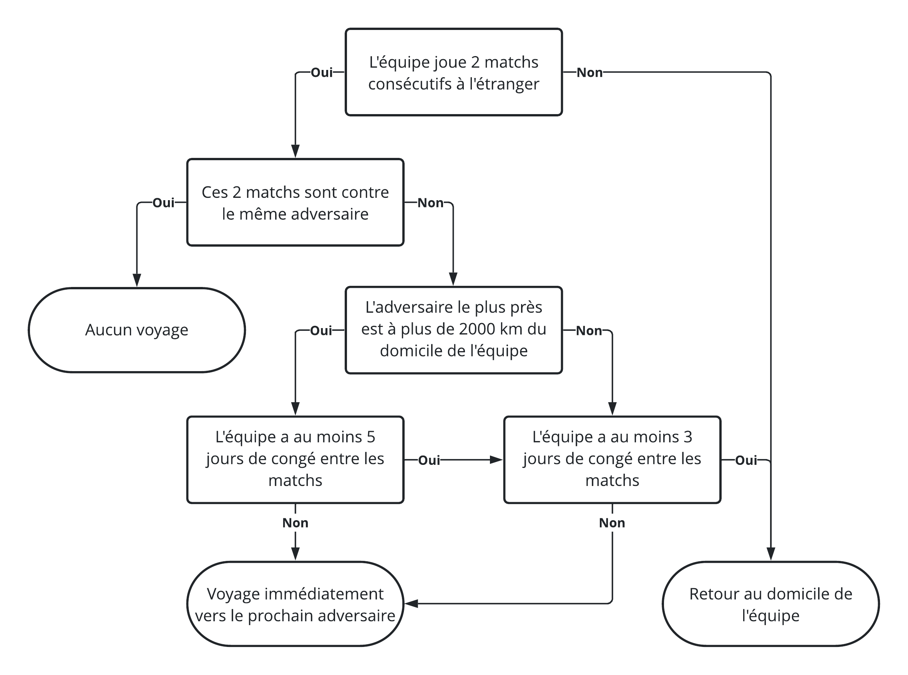
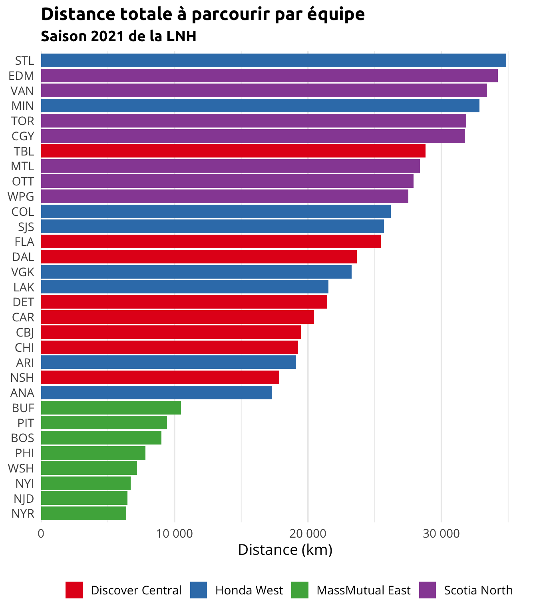

Analyse des déplacements
Afin d’être en mesure de faire notre analyse, on doit tout d’abord poser d’autres hypothèses, cette fois par rapport à la fréquence de déplacement des équipes. Évidemment, celles-ci ne sont pas nécessairement exactes, mais j’ai essayé de construite un algorithme balancé entre simplicité et réalité.
On pose donc les hypothèses suivantes :
- Chaque équipe est basée à son domicile en début de saison;
- Les déplacements à l’étranger sont effectués selon l’algorithme présenté ci-dessous.

On peut faire un exemple concret en appliquant ces hypothèses au début de saison des Canadiens de Montréal pour bien comprendre. On obtient alors, pour les deux premières semaines de leur calendrier, les voyages suivants :
Match du 13 janvier 2021 (MTL @ TOR)
- L’équipe est basée à MTL en début de saison
⇒ Verdict : Voyage de MTL vers TOR ✈️
Match du 16 janvier 2021 (MTL @ EDM)
- L’équipe joue 2 matchs consécutifs sur la route (13 et 16 janvier)
- Ces deux matchs ne sont pas contre le même adversaire (TOR et EDM)
- L’adversaire le plus près (TOR) n’est pas à plus de 2000 km de MTL
- L’équipe n’a pas 3 jours de congé entre les matchs (seulement les 14 et 15 janvier)
⇒ Verdict : Voyage de TOR vers EDM ✈️
Match du 18 janvier 2021 (MTL @ EDM)
- L’équipe joue 2 matchs consécutifs sur la route (16 et 18 janvier)
- Ces deux matchs sont contre le même adversaire (EDM)
⇒ Verdict : Aucun voyage 🏨
Match du 20 janvier 2021 (MTL @ VAN)
- L’équipe joue 2 matchs consécutifs sur la route (18 et 20 janvier)
- Ces deux matchs ne sont pas contre le même adversaire (EDM et VAN)
- L’adversaire le plus près (EDM) est à plus de 2000 km de MTL
- L’équipe n’a pas 5 jours de congé entre les matchs (seulement le 19 janvier)
⇒ Verdict : Voyage de EDM vers VAN ✈️
Match du 21 janvier 2021 (MTL @ VAN)
- L’équipe joue 2 matchs consécutifs sur la route (20 et 21 janvier)
- Ces deux matchs sont contre le même adversaire (VAN)
⇒ Verdict : Aucun voyage 🏨
Match du 23 janvier 2021 (MTL @ VAN)
- L’équipe joue 2 matchs consécutifs sur la route (21 et 23 janvier)
- Ces deux matchs sont contre le même adversaire (VAN)
⇒ Verdict : Aucun voyage 🏨
Match du 28 janvier 2021 (CGY @ MTL)
- L’équipe ne joue pas 2 matchs consécutifs sur la route
⇒ Verdict : Voyage de VAN vers MTL ✈️
On crée maintenant une fonction implantant cet algorithme et on l’applique à l’ensemble des équipes pour leur calendrier 2021.
# Définir la fonction create_teams_travels()
create_teams_travels <- function(teams_schedule) {
teams_travels <- teams_schedule[, rbindlist(mapply(
FUN = function(team, venue, last_venue, off_days) {
# Empêcher les collisions
TEAM <- team
# Aucun voyage
if (venue == last_venue) {
return(NULL)
}
# Direction prochain match
if (is.na(off_days) | off_days < 3L | team %in% c(venue, last_venue)) {
return(list(
from = last_venue,
to = venue
))
}
# Distance minimale du domicile
distance <- teams_distances[team == TEAM & opponent %in% c(venue, last_venue), min(distance)]
# Direction domicile + Direction prochain match
if (off_days >= 5L | (off_days >= 3L & distance <= 2000L)) {
return(list(
from = c(last_venue, team),
to = c(team, venue)
))
}
# Direction prochain match
list(
from = last_venue,
to = venue
)
},
team = team,
venue = venue,
last_venue = last_venue,
off_days = date - last_date - 1L,
SIMPLIFY = FALSE
)), .(season, team)]
# Ajouter la distance des voyages
teams_travels[teams_distances, distance := distance, on = c(from = "team", to = "opponent")]
# Appeler la valeur de sortie
teams_travels[]
}
# Appliquer la fonction au calendrier 2021 des équipes
teams_travels_2021 <- create_teams_travels(teams_schedule_2021)
# Afficher un aperçu
teams_travels_2021[]
#> season team from to distance
#> 1: 2020-21 ANA ANA VGK 354
#> 2: 2020-21 ANA VGK ANA 354
#> 3: 2020-21 ANA ANA ARI 522
#> 4: 2020-21 ANA ARI ANA 522
#> 5: 2020-21 ANA ANA LAK 45
#> ---
#> 744: 2020-21 WSH BOS NYI 279
#> 745: 2020-21 WSH NYI PHI 162
#> 746: 2020-21 WSH PHI WSH 194
#> 747: 2020-21 WSH WSH NYR 331
#> 748: 2020-21 WSH NYR WSH 331On peut facilement valider que notre exemple pour le début de saison des Canadiens est bien représenté par l’algorithme.
teams_travels_2021[team == "MTL"][1:4]
#> season team from to distance
#> 1: 2020-21 MTL MTL TOR 505
#> 2: 2020-21 MTL TOR EDM 2714
#> 3: 2020-21 MTL EDM VAN 819
#> 4: 2020-21 MTL VAN MTL 3696On crée ensuite un sommaire par équipe indiquant la distance totale qui sera parcourue au cours de la saison 2021 auquel on vient ajouter la division actuelle de chaque équipe.
# Définir la fonction create_teams_travel_summary()
create_teams_travel_summary <- function(teams_travels, nhl_schedule) {
# Créer un tableau sommaire
teams_travel_summary <- teams_travels[, .(
nb = .N,
km = sum(distance)
), .(season, team)]
# Ajout du nombre de km par jour de saison
nhl_season_days <- nhl_schedule[, .(
season_years = season_years,
game_date = as.Date(game_datetime, tz = Sys.timezone())
)][, .(days = as.integer(max(game_date) - min(game_date) + 1L)), season_years]
teams_travel_summary[nhl_season_days, days := days, on = c(season = "season_years")]
teams_travel_summary[, km_per_day := km / days]
# Ajout des divisions
teams_travel_summary[teams_meta, division := division_active_name, on = c(team = "team_abbreviation")]
# Appeler la valeur de sortie
teams_travel_summary[]
}
# Appliquer la fonction aux voyages 2021 des équipes
teams_travel_summary_2021 <- create_teams_travel_summary(teams_travels_2021, nhl_schedule_2021)
# Afficher un aperçu
teams_travel_summary_2021[]
#> season team nb km days km_per_day division
#> 1: 2020-21 ANA 23 17275 118 146.39831 Honda West
#> 2: 2020-21 ARI 19 19110 118 161.94915 Honda West
#> 3: 2020-21 BOS 25 9012 118 76.37288 MassMutual East
#> 4: 2020-21 BUF 26 10483 118 88.83898 MassMutual East
#> 5: 2020-21 CAR 22 20457 118 173.36441 Discover Central
#> ---
#> 27: 2020-21 TOR 29 31852 118 269.93220 Scotia North
#> 28: 2020-21 VAN 22 33415 118 283.17797 Scotia North
#> 29: 2020-21 VGK 24 23275 118 197.24576 Honda West
#> 30: 2020-21 WPG 23 27515 118 233.17797 Scotia North
#> 31: 2020-21 WSH 25 7191 118 60.94068 MassMutual EastOn affiche maintenant un graphique permettant de visualiser cette information pour l’ensemble des
équipes de la ligue. On utilise respectivement les packages
ggplot2 et scales pour créer le
graphique et en modifier le formatage.
# Charger les packages
library(ggplot2)
library(scales)
# Créer le graphique
ggplot(
data = teams_travel_summary_2021,
mapping = aes(
x = km,
y = reorder(as.factor(team), km),
fill = division
)
) +
geom_col() +
scale_x_continuous(
labels = label_number(),
expand = expansion(mult = c(0, 0.05))
) +
scale_fill_brewer(palette = "Set1") +
labs(
title = "Distance totale à parcourir par équipe",
subtitle = "Saison 2021 de la LNH",
x = "Distance (km)"
)
Comme on pouvait s’y en attendre, les équipes près de la région métropolitaine de New York sont celles qui auront la plus petite distance à parcourir. On voit clairement que les équipes de la division canadienne sont celles qui, en moyenne, parcoureront le plus de kilomètres pendant la saison. Cependant, la distribution à l’intérieur de cette division est assez uniforme, ce qui n’est pas le cas pour la division ouest. Alors que les Ducks n’auront qu’un peu plus de 17 000 km à parcourir pendant la saison, les Blues en parcoureront près de 35 000 (plus du double 😱!) pendant la même période. Reste à voir si ce sera assez pour permettre aux Ducks de compenser pour leur manque de talent offensif…

Une chose est certaine, si la fatigue accumulée générée en raison du voyagement pendant la saison s’avère être un bon indicateur de la performance des joueurs en séries, la division est partira avec un avantage considérable sur ses adversaires au printemps prochain.